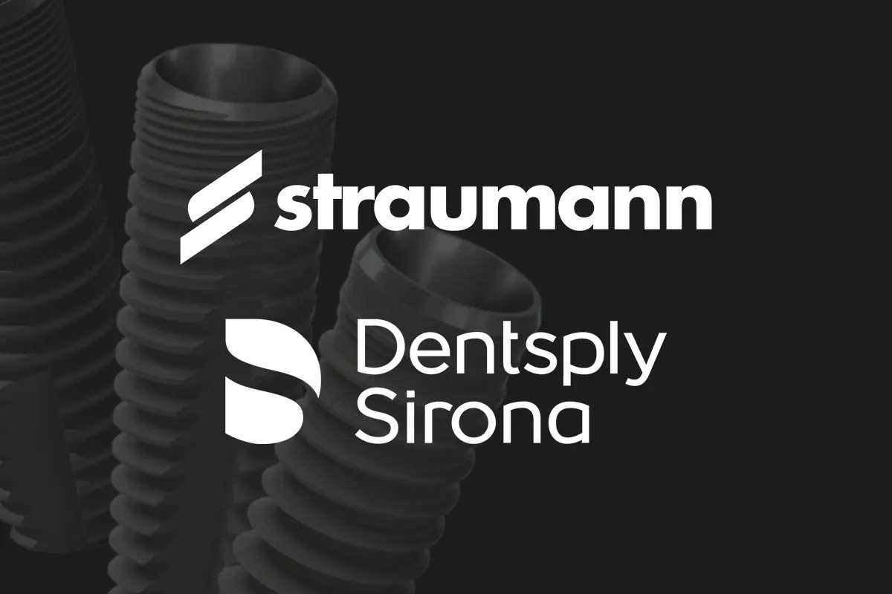
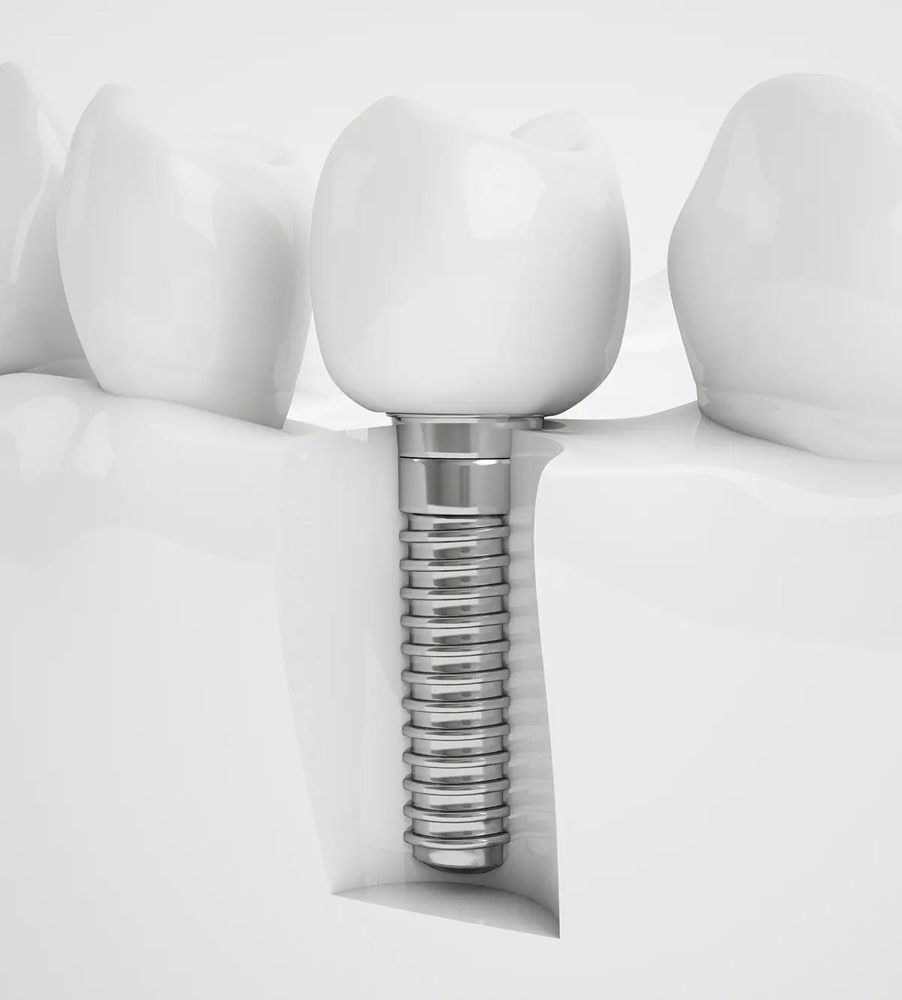
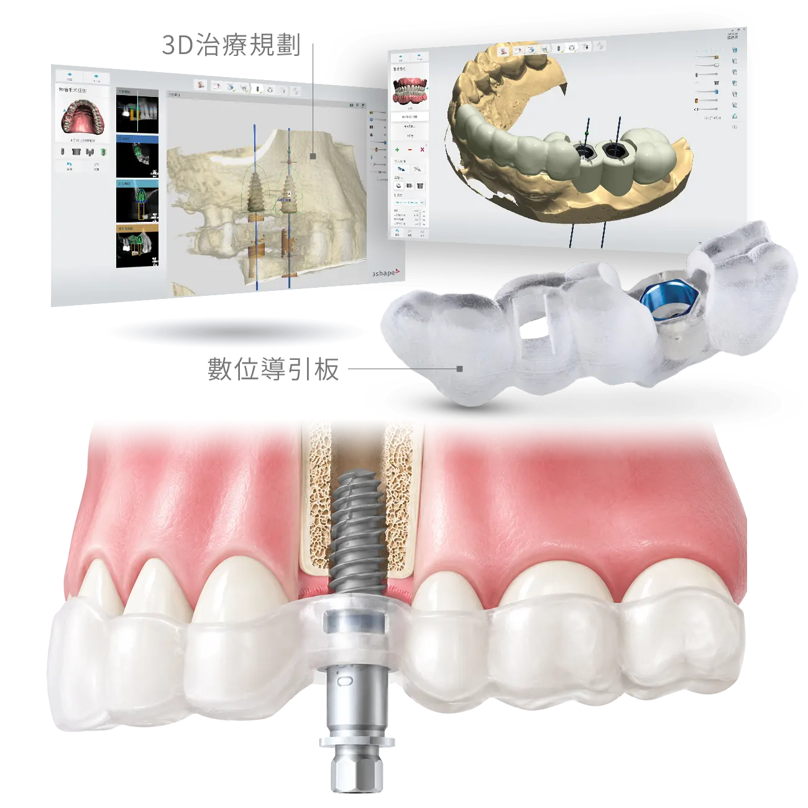
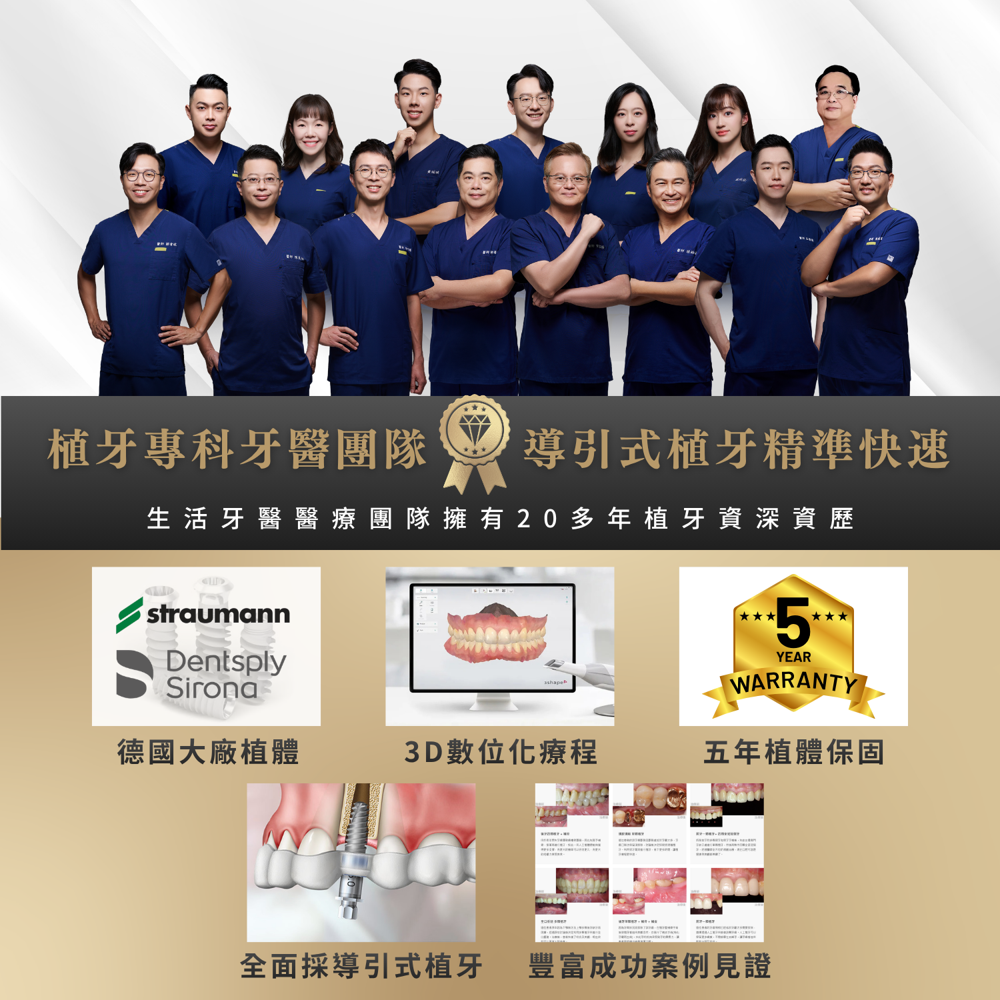
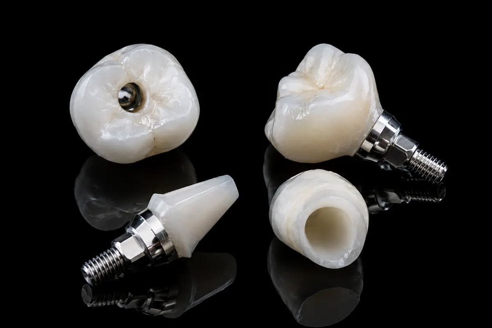
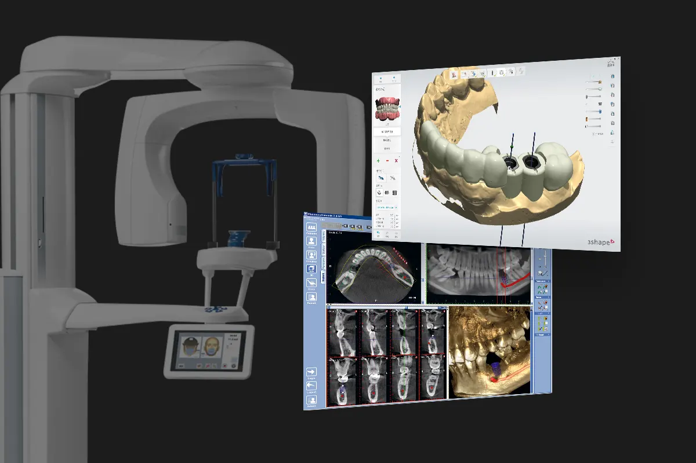
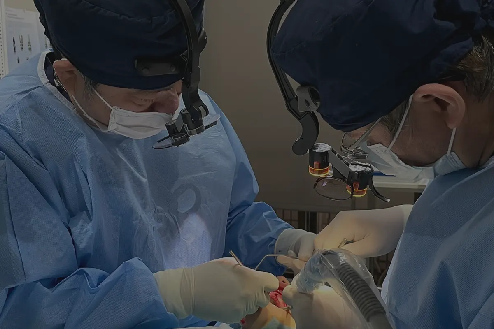
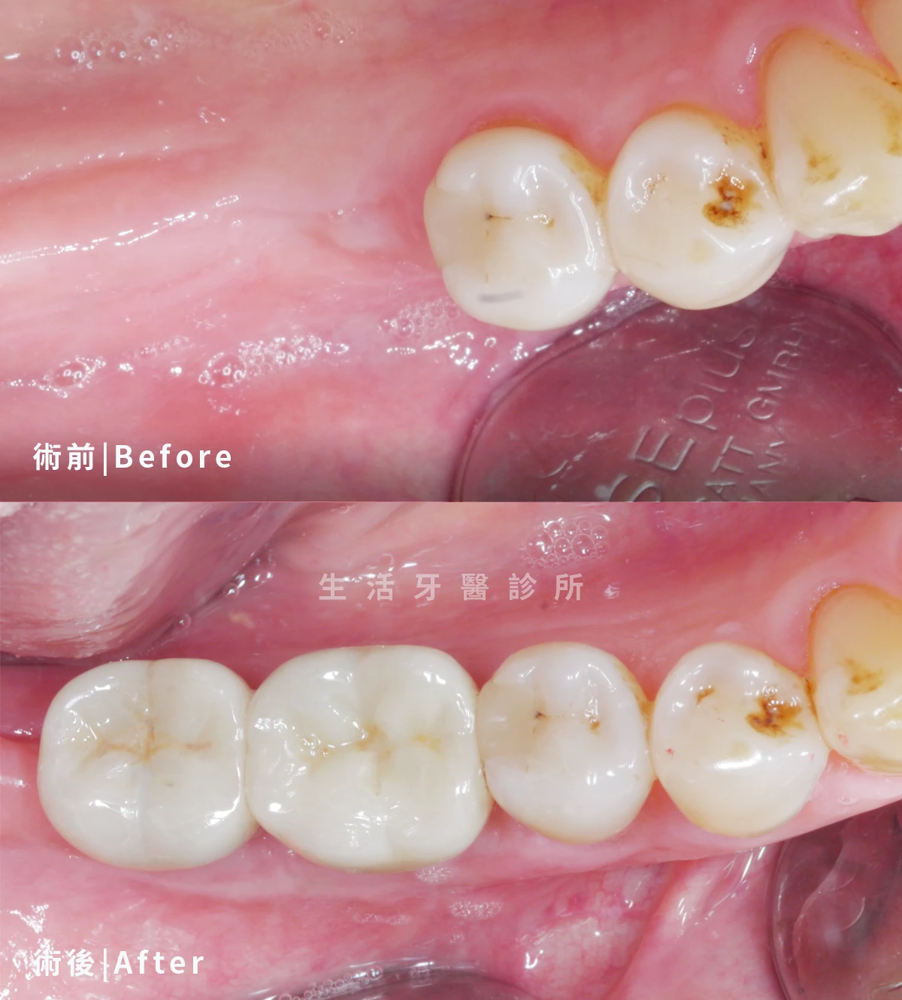
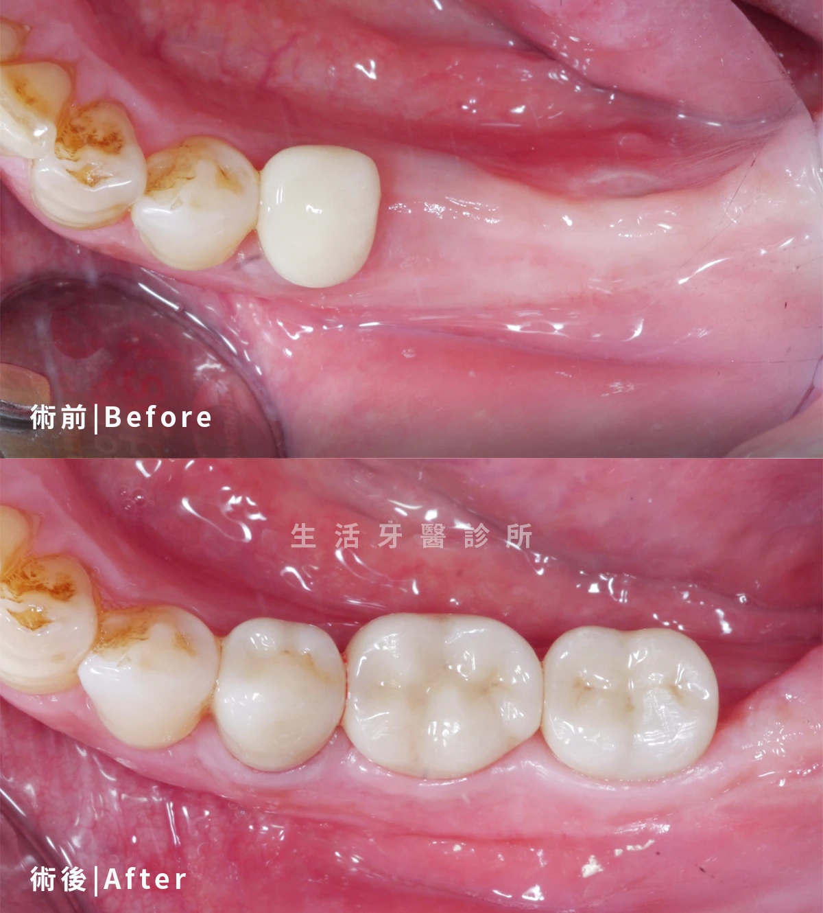
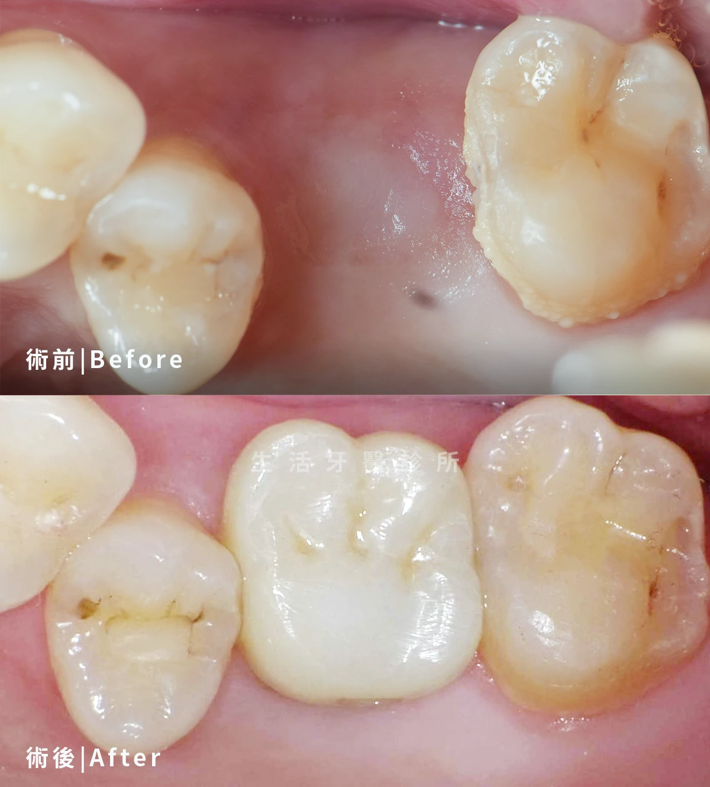

世界領導品牌植體 Straumann 及 Dentsply
採用國際植體品牌作為治療選項，依骨質條件、缺牙位置與假牙需求選擇合適系統。
以數位影像與精準規劃，重建穩定咀嚼力
生活牙醫以 3D 電腦斷層、口腔掃描與植牙規劃流程，評估缺牙位置、骨質條件、牙周健康與咬合關係。 從術前診斷到假牙修復，為單顆、多顆缺牙與全口重建需求制定個人化植牙計畫。

數位植牙是透過影像、掃描與軟體規劃，協助醫師在手術前掌握骨質、神經位置與假牙方向，讓植牙治療更有依據。
人工植牙是以人工牙根取代缺牙牙根，再接上支台齒與假牙，恢復咀嚼與外觀。數位植牙則在傳統植牙基礎上，加入 3D 影像、口內掃描、臉部或咬合資料整合，讓醫師能從手術到假牙完成一併規劃。
生活牙醫會依照缺牙範圍、齒槽骨條件、牙周狀況與全身健康狀態，評估是否需要補骨、鼻竇增高、導引板或其他輔助手術，讓療程安排更清楚。

生活牙醫醫療團隊擁有 25 年植牙資深資歷，從植體選擇、數位規劃到術後保固，讓植牙療程更有依據。


採用國際植體品牌作為治療選項，依骨質條件、缺牙位置與假牙需求選擇合適系統。

依咬合力量、美觀需求與清潔條件，規劃全鋯冠或全瓷冠植牙假牙修復。

透過 3D 斷層攝影評估骨質高度、寬度與神經位置，讓術前規劃更完整。

植牙完成後提供植體保固與定期追蹤，協助患者維持長期穩定使用。
植牙不是只把植體放進骨頭，而是從口腔健康、骨質、咬合與假牙設計一起規劃的重建療程。
| 比較項目 | 植牙推薦 | 假牙牙橋 | 活動假牙 |
|---|---|---|---|
| 適合對象 | 單顆或多顆缺牙，骨質條件可重建者 | 前後鄰牙健康且可作為支撐者 | 多顆或全口缺牙，預算或手術條件有限者 |
| 是否需修磨鄰牙 | ◎ 不需修磨健康鄰牙 | △ 通常需修磨兩側鄰牙 | ◎ 多數不需修磨大量齒質 |
| 咀嚼穩定度 | ◎ 接近自然牙的固定支撐 | ◎ 固定式假牙，穩定度佳 | △ 可能有晃動或異物感 |
| 清潔維護 | 需定期回診，維護植體周圍牙齦健康 | 牙橋下方需使用牙線穿引器或特殊清潔工具 | 需每日取下清潔，並照護支撐牙與牙肉 |
| 主要考量 | 需評估骨質、手術條件與治療期程 | 鄰牙會承受較多負擔，長期清潔要更仔細 | 費用較彈性，但舒適度與咬合力通常較有限 |
嚴選真實案例，由專業醫師團隊親自操刀，沒有千篇一律的療程，只有最適合你的量身規劃



整理諮詢時最常被問到的問題，協助您在治療前更清楚了解流程、費用與照護方式。
整理諮詢時常見的問題，協助您在看診前先掌握基本方向。
歡迎預約諮詢，由醫師一對一親診為您規劃療程，讓我們一起打造最符合需求的治療方案